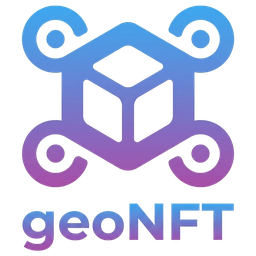

geoNFT plugin for QGIS · Version {{legal_version}}
These terms govern the use of the geoNFT online services (the portal and identity provider, Connected Systems, the ledger API and the Indy resolver, together the "services") through the geoNFT plugin for QGIS (the "plugin"). The services are provided by {{operator_name}}, {{operator_address}} (the "operator").
The plugin software is free software under the GNU General Public License, version 2 or later. Nothing in these terms restricts the rights that license gives you to run, study, change and share the software. These terms apply only to the services you reach with it.
By pressing Accept in the plugin you agree to these terms. If you do not agree, the plugin does not connect to the services.
This version of the plugin is marked experimental. Features, data formats and service addresses may change without notice, and the plugin may contain errors. Do not rely on it as the only basis for decisions with legal, financial or safety consequences.
You must not
Verify against ledger recomputes hashes, chains and signatures and compares them with the record on the ledger and with the certificates shipped in the plugin. A "verified" result means these technical checks passed at that moment. It is not a legal certification, an expert opinion or a guarantee that the data is complete, correct or fit for a particular purpose.
The base map is provided by OpenStreetMap under the Open Database License (© OpenStreetMap contributors, openstreetmap.org/copyright) and is subject to the OpenStreetMap tile usage policy. Keep the attribution when you publish maps that contain it. Pictures are loaded from IPFS gateways run by third parties. The operator does not control these services.
The operator may change, limit or discontinue the services, in particular during the experimental phase, and may suspend access in case of a breach of these terms. There is no guaranteed availability.
The plugin software comes without warranty, as stated in the GNU General Public License. The services are provided free of charge through the plugin, beyond any license you purchased in the portal, and "as is".
The operator is liable without limitation for intent and gross negligence, for injury to life, body or health, and where liability is mandatory by law, such as under product liability law. For slight negligence the operator is liable only for breach of an essential obligation whose fulfilment makes the proper use of the services possible and on which you may regularly rely, and then only for the typical, foreseeable damage. Otherwise the operator's liability is excluded.
You may stop using the services at any time: sign out and remove the plugin. Deleting your portal account is done in the portal.
The operator may update these terms. The plugin then shows the new version and asks for acceptance before it connects again. If you do not accept, the plugin does not connect.
These terms are governed by the law of {{operator_jurisdiction}}, excluding the UN Convention on Contracts for the International Sale of Goods. If you are a consumer, the mandatory consumer protection of the country where you live still applies. Should a provision be invalid, the others remain in force.
Questions: {{operator_email}}